Introduction to Density Functional Theory¶
Density Functional Theory (DFT) is a quantum mechanical technique which solves the ground-state wavefunction of a many electron problem by solving electron density of the system and relying on the one-to-one correspondence between the electron density and the wavefunction.
The discussion of the subject here is not a rigorous explanation, but references to a more rigorous explanation for those interested in the subject is provided, including both original citations as well more modern references. Instead, an exposition which highlights fundamental assumptions and mathematical concepts are discussed to give an understanding of the sources of error due to convergence issues and fundamental sources of errors due to inadequate modelling assumptions.
To motivate the discussion of Density Functional Theory (DFT), let us first start with a discussion of quantum mechanics and solutions of Schroedingers equation to introduce the notation familiar with quantum mechanics. We explain the components of the Schroedinger’s equation as applied to to nuclear-electronic solutions pertinent to materials science.
The adibiatic approximation of the nuclear-electron problem allows the separation of the nuclear wavefunction from the electronic wavefunctions. The application of the Born-Oppenheimer approximation allows to solve the electronic wavefunction separately by treating the electrons where clamped nuclear positions produces potential which interacts with the electrons.
Next successive solutions of the these solutions are discussed with particular discussion to solutions of the Hartree-Roothan equations and Slater polynomials.
We then discuss the foundational Hohenberg-Kohn theorems and the Kohn-Sham equations which are the foundation of DFT. A discussion of solutions of the Kohn-Sham using orbital basis sets (more common for modelling molecules) and the plane wave basis sets (more common in modelling solids) and the ramification for computation.
Finally a discussion on the psuedopotentials, GGA and PBE.
Schroedinger equation¶
Single-particle¶
It is useful to step back and recall elementary quantum mechanics to both review concept and to introduce terminology required to understand Density Functional Theory. Let us consider the Schroedinger’s equation for a single-particle.
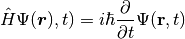
The Hamiltonian.
The wavefunction.
Multi-particle¶
http://www.reed.edu/physics/courses/P342.S10/Physics342/page1/files/Lecture.31.pdf
In quantum mechanics, the information about a system is contained in a system’s wavefunction  . Here we are concerned with the electronic structure of atoms, molecules, and solids. The degrees of freedom of the nuclei appear only in the form of a potential 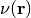, so that the function depends only on the electronic coordinates, from the Born-Oppenheimer approximation which allows to use the time-independent version of the Schroedinger’s equation.
. Here we are concerned with the electronic structure of atoms, molecules, and solids. The degrees of freedom of the nuclei appear only in the form of a potential 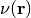, so that the function depends only on the electronic coordinates, from the Born-Oppenheimer approximation which allows to use the time-independent version of the Schroedinger’s equation.
Zwiebach’s notes on wave mechanics, bras and kets, linear algebra, Dirac noation,
Consider a system with Hamiltonian 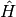 and the time independent Schrodinger equation
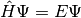
by using the variational principle
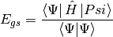
Is an eigenvalue problem and be expressed through an eigenvalue eigenvector expansion
Is an eigenvalue eigenvalue expansion.
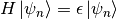
Born-Oppenheimer Approximation¶
Consider a system consisting of atoms. Let us denote the collection of the position of atoms by the set 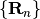, and the collection of position of electrons by the set 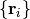.
The Hamiltonian for this system is
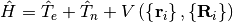
Then ground state wavefunction, :math:Phi = Phileft(left{mathbf{r}_iright},left{mathbf{R}_nright}right)`, which solves the Schrodinger equation, 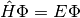.
Additional Resources¶
For standard references on quantum mechanics, the undergraduate textbook by Griffiths [Gri16], and the graduate textbooks by Shankar [Sha12], and Sakurai [SN14].
For an introduction to DFT, a gentle introduction to the subject which only requires a cursory understanding of quantum mechanics can be found in Capelle [Cap06]
Since the original paper on the Born-Oppenheimer approximation is in German, it is necessary to have an English language resource.
Bibliography¶
- Cap06
Klaus Capelle. A bird’s-eye view of density-functional theory. Brazilian Journal of Physics, 36(4A):1318–1343, 2006.
- Gri16
David J Griffiths. Introduction to quantum mechanics. Cambridge University Press, 2016.
- SN14
Jun John Sakurai and Jim J Napolitano. Modern quantum mechanics. Pearson Higher Ed, 2014.
- Sha12
Ramamurti Shankar. Principles of quantum mechanics. Springer Science & Business Media, 2012.